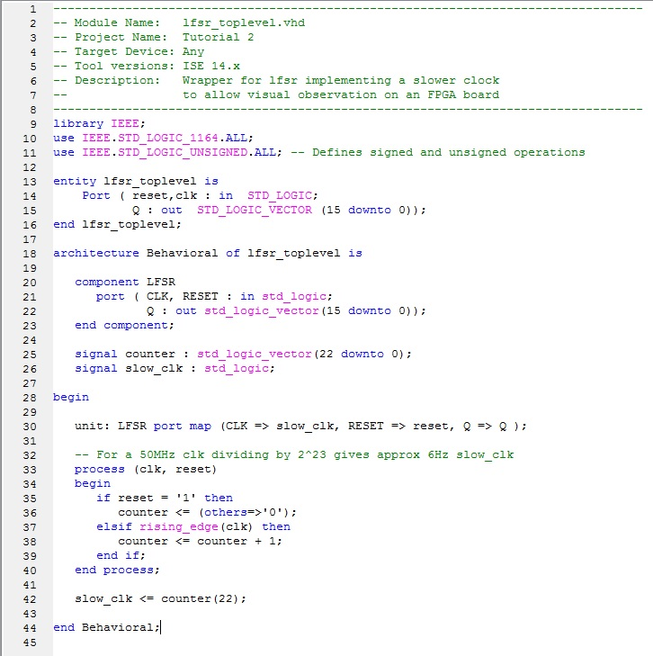

EEE6225 Systems Design
| Tutorial 2: Linear Feedback Shift Register |
| Onward design |
Now back in Project Navigator we need to create a new VHDL Module file called lfsr_toplevel. We'll use this to hold our lfsr and stimulate it with a suitable clock. When setting the ports, use the entity description below to help you. When asked to set the ports for this new module, use the ports as defined in the lfsr_toplevel entity example shown below. Once the file has been created, edit it to match that laid out below in Figure 1. |
|  Figure 1. LFSR driven by slow clock |
QUESTION: Can you see what the code is designed to do? Check syntax and then Synthesize LFSR_toplevel correcting any problems as they occur. |
| Assign Package Pins |
Now create a constraints file for the LFSR_toplevel module and set its pin allocations using PlanAhead as given in the table below. Note: these pins are for the Digilent S3 board ONLY. For other boards see FPGA board reference manuals.
|
| Implement design |
Now Synthesize again and then Implement and Generate Programming File of the design in the usual way. |
| Programming the FPGA and testing |
Download your design into an FPGA board using the correct programming tool and see what happens when it starts to run. Talk with the demonstrator about what you have seen and allow the demonstrator to confirm that your circuit is working properly. OPTIONAL: the keener students may wish to use the 4 off 7-segment displays on the Diglent board to display the LFSR value in hexadecimal. This requires inplementing a multiplexer (4-way 4-bit), a 4-bit binary nibble to 7-segment decoder together with a counter (2-bit) and 2-to-4 line decoder to drive the cathode and anode lines of the display. Are you up to this challenge? |
| Continue on to Exercise |